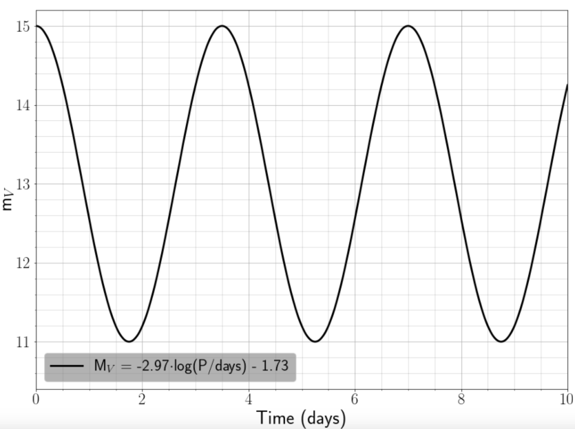
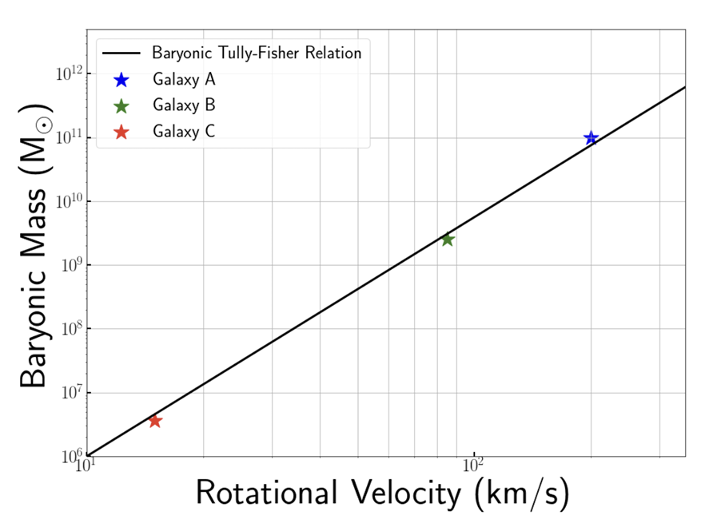
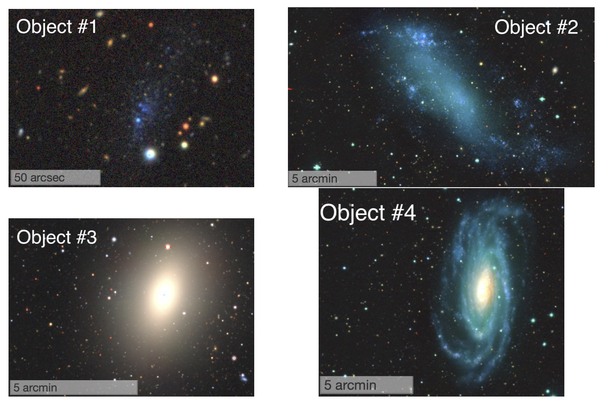

import astropy.units as u
import astropy.constants as const
import numpy as np
r = 11.5 * u.kpc
v_c = 220 * u.km / u.s
r_s = 2 * v_c ** 2 * r / const.c ** 2
print(f"radius of event horizon: {r_s.to(u.pc):.4f}")radius of event horizon: 0.0124 pcWill St. John
The circular velocity of a star that is located 11.5 kpc from the Galactic Center is 220 km/s.
Answer: Since the star is moving in circular motion, we can derive the mass by rearranging the following equation of circular velocity for mass.
\[v_c = \sqrt{\frac{GM}{r}}\longrightarrow M = \frac{v_c^2r}{G}.\]
Additionally, we know that the radius of the event horizon is described by the Schwartzchild Radius
\[r_s = \frac{2GM}{c^2}.\]
Substituting in our value for the mass algibraically gives
\[r_s = \frac{2v_c^2r}{c^2},\]
which is dimensionally consistent. The following code chunk estimates the event horizon radius to be 0.0124 pc.
import astropy.units as u
import astropy.constants as const
import numpy as np
r = 11.5 * u.kpc
v_c = 220 * u.km / u.s
r_s = 2 * v_c ** 2 * r / const.c ** 2
print(f"radius of event horizon: {r_s.to(u.pc):.4f}")radius of event horizon: 0.0124 pcAdditionally, we believe there to be a supermassive black hole at the center of our galaxy based on orbits of stars near the center and x-ray and gamma ray emissions. If we look at the galactic center in the infrared, we can peer through the gas and dust to see the physical locations of the stars near the galactic center. If we track the positions of the stars across a range of observations, we can model the orbit of the stars about the common center of mass and use Kepler’s 3rd Law to determine the mass given the period and semimajor axis. The mass we calculate is on the order of \(10^6\) \(M_\odot\), which is too large for any star. Combining this with x-ray and gamma ray observations that are cospatial on the region of this ultra-high mass concetration give us evidence for a supermassive black hole, where the high energy emissions are the result of matter falling onto the black hole.
Answer: A NFW, or Navarro-Frenk-White, profile is a typical model for dark matter halos. Assuming the halos are spherical in nature, the NFW profile describes the density of dark matter as a function of radius, and only depends on two other parameters. To ellaborate on the usefulness of this model more, it gives us an estimate how much dark matter we expect at there to be at any point in space, which is extremely useful given how dark matter tends to not interact with normal baryonic matter, making it impossible to see by conventional methods.
The equation itself is
\[\rho(r) = \frac{\rho_0}{\left(\frac{r}{a}\right)\left(1+\frac{r}{a}\right)^2},\]
where \(rho_0\) and \(a\) are normalization factors. The following code chunk calculates the density of dark matter at \(r=17.18\) kpc with the given normalization factors to be \(2.81\times10^7\) Solar masses per cubic kpc.
Two elliptical galaxies, A and B, have measured central velocity dispersions of \(\sigma_A = 97\) km/s and \(\sigma_B = 122\) km/s. Which of these galaxies is more intrinsically luminous, and by how many magnitudes?
Answer: Elliptical galaxies follow the Faber-Jackson relation where the velocity dispersion is proportional to the luminosity. More specifically,
\[\sigma^4 \propto L.\]
By this relation, we would expect galaxy B to be more luminous. Using the relationship for the difference in magnitude,
\[M_1 - M_2 = -2.5 \log_{10}\left(\frac{L_1}{L_2}\right),\]
we can derive the difference in magnitude between A and B to be
\[M_A - M_B = -2.5 \log_{10}\left(\frac{L_A}{L_B}\right) = -2.5 \log_{10}\left(\frac{\sigma_A^4}{\sigma_B^4}\right)\]
The following code chunk calculates difference in magnitudes to be 0.996 mag, thus B is around a magnitude brighter than A.
The plot shows the observed apparent magnitude of a star in the V-band. This variable star obeys the period-luminosity relation given in the legend.

Answer: The absolute magnitude of the star can be calculated using the relation given in the lengend of the plot. The code chunk below calculates just that.
More broadly, period-luminosity relations, like those of Cepheid variables or RR Lyrae variables, are useful relationships for distance determinations. The general idea is that a star (high mass for Cepheid, low mass for RR Lyrae) is undergoing a period of pulsation that is directly related to the luminosity of the star. By measuring the period, we can back-out the luminosity and calcualte the distance to the object. For Cepheids, this pulsation period occurs as they are becoming red giants, while RR Lyrae stars are traveling along the horizontal branch.
The plot to the right shows one calibration of the baryonic Tully-Fisher relation (BTFR). Three individual galaxies are labeled. Next consider the four objects shown in the images below; note that the scale bar in each image sets the angular size. Using your knowledge of the properties of galaxies, match the images of three of these galaxies to their positions on the BTFR. Be sure to justify your assignments, including why the fourth object is not included on the plot.


Answer: The baryonic Tully-Fisher relation (BTFR) only applies for spiral galaxies because the relationship was derived under the assumption of circular motion. Thus, the ellipitical galaxy, represented as Image #3, does not appear on the plot. The BTFR says that a spiral galaxy’s rotational velocity is related to it’s mass, wherein low mass galaxies spin at slower rates than high mass galaxies. By this metric, we would expect the spiral galaxy shown in Image #4 to align with galaxy A. Additionally, Leo P is one of the lowest dwarf galaxies that still lies along the BTFR, which would put Image #1 aligning with galaxy C. That would leave galaxy B to align with Image #2, which makes sense when comparing the amount of stellar matierial we see in Image #2 to Images #1 and #4; Image #2 has more mass than #1, but less mass than #4.
Thank you for a wonderful semester! While we didn’t get through all of astrophysics, we did cover a lot of it. As you reflect back on the material that we discussed together, I’d love to hear a brief response (a few sentences each) to the following questions. Please include physical arguments in your responses.
Answer: Cosmology and the (brief) introduction we got into the Big Bang were the some of the most intereesting topics we covered, primarily because they are our best answer to those basic questions of “how did we get here” and “where are we going”. I know that’s a pretty cheesy answer, but I’ve always been interested in understanding the Universe on the large scale and the equations that govern how we see things toda, but I feel like I’ve only ever learned surface level information. Learning about the Einstein Field Equations, the Friedmann Equation, and being exposed to tensors felt new and exciting. I wish we had a class that covered the material. Learning about the Big Bang and how fast the Universe evolved was really fun to talk about, but I wish we could have spent more time on it.
I can’t choose just one area of astrophysics to devote more focused research in because they all feel so interconnected. Studying dwarf galaxies inveitably results in you applying some constraints to dark matter. Studying cosmology requires you to know how stars form to understand what proportions of elements we expect there to be throughout cosmic history. Personally, I want to devote my work to cosmology and large-scale structure, but I imagine I will be dabbling in other fields along the way.